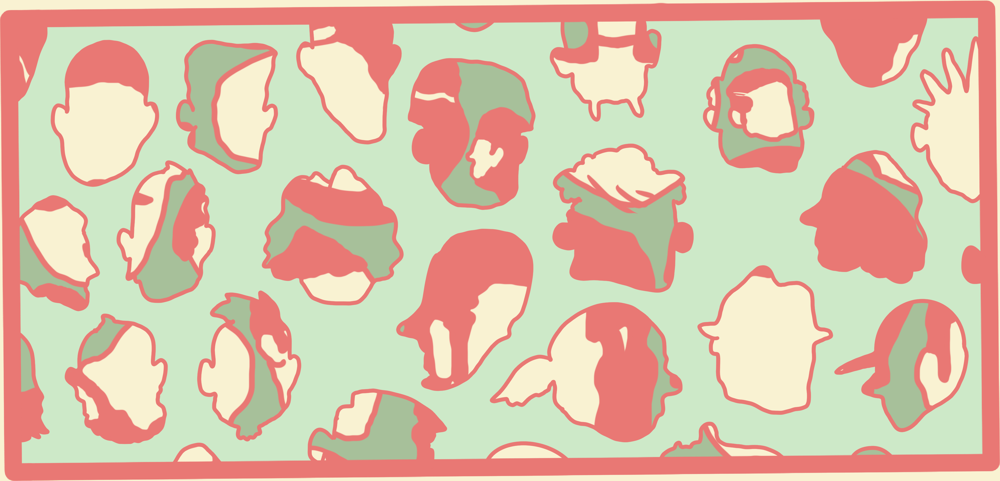

I still get a hollow feeling on Labor Day
when the summer ends
and I remember how I would always refer
to her boyfriends as what's-his-face,
which was wrong of me and I'd like to
apologize to those guys right now, wherever they are:

Proceed!